I nostri numeri sull'Italia
Questa sezione del sito si propone di fornire strumenti di semplice lettura e comprensione per restituire in modo quanto più possibile immediato una vasta mole di informazioni rilevanti su ciò che succede e su come si vive oggi in Italia.
Cliccando su ciascuno dei bottoni qui sotto verranno visualizzati alcuni grafici, accompagnati da brevi testi di commento, che abbiamo selezionato con il duplice obiettivo di gettare una luce sulle tendenze in atto in Italia e di fotografare i problemi e le sfide più urgenti da affrontare nell’immediato futuro.
I grafici indagano la condizione del nostro paese rispetto agli anni passati o al confronto con gli altri Stati europei: organizzati rispettando la partizione dei diversi capitoli della Controfinanziaria di Sbilanciamoci!, presentano e riassumono molti dati economici, sociali e ambientali, dal sistema fiscale all’occupazione, dal mercato del lavoro al reddito, dal welfare all’istruzione e la formazione, fino alle spese militari.
In altri termini, i grafici che seguono sono idealmente pensati come tappe di un percorso che inquadra e attraversa le diverse priorità che dovrebbero stare al centro dell’agenda politica di un paese attento alla giustizia economica e sociale, all’equità fiscale, alla sostenibilità ambientale. Cominciando proprio da quello che Sbilanciamoci! da sempre propone: il buon utilizzo della spesa pubblica “per i diritti, la pace, l’ambiente”.
Continuiamo a essere indebitati...
Dopo anni di politiche di austerità, finalizzate ufficialmente ad abbattere il debito pubblico, i paesi europei continuano a registrare livelli di debito record (soprattutto a causa del calo del Pil). Al primo posto c’è la Grecia, con un rapporto debito/Pil pari a poco meno del 180%, seguita dall’Italia (132%), dal Portogallo (130%), dall’Irlanda (107%) e dalla Spagna (99,5%). Nettamente inferiore alla media la Germania, con un rapporto debito/Pil del 75%. All’ultimo posto compare invece il Lussemburgo, con un rapporto del 23%.
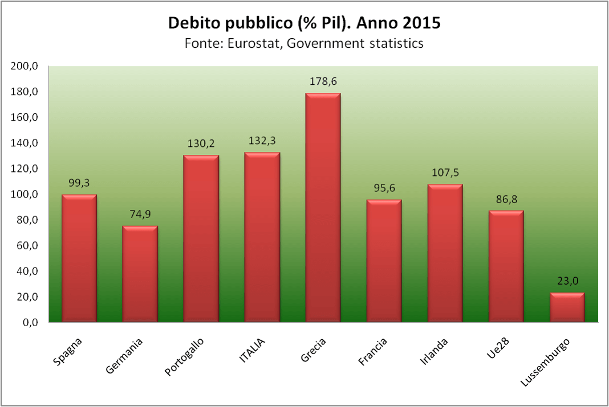…ma il deficit tiene
L’Italia ha la cattiva fama di essere un paese “spendaccione” e dalle finanze pubbliche disastrate. Ma un rapido sguardo ai dati sul deficit e sul saldo primario (si veda anche il grafico successivo) è sufficiente a rivelare come nel 2015 l’Italia abbia fatto registrare un livello di indebitamento netto (comprensivo quindi della spesa per interessi) pari al 3%, perfettamente in linea con la media europea e inferiore a quello di tutti gli altri paesi della periferia – Grecia, Portogallo, Spagna, Irlanda.
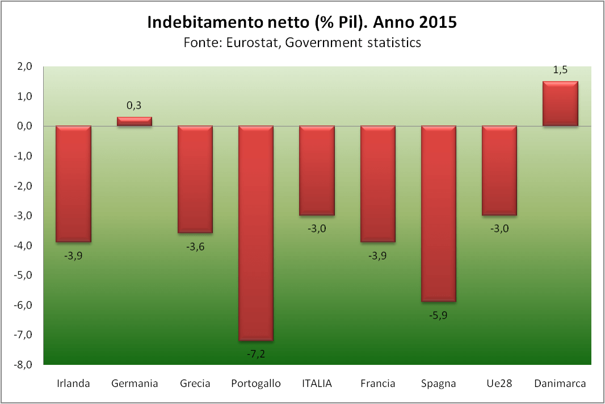Tutta colpa degli interessi
Se si guarda al dato del saldo primario – la differenza tra entrate e uscite di un paese, esclusa la spesa per interessi – l’Italia risulta essere addirittura uno dei paesi più virtuosi del continente, con un avanzo primario pari all’1,6%, nettamente superiore alla media europea (-0,5%). Altri paesi come Francia, Spagna e Portogallo fanno registrare avanzi primari molto peggiori. Questo significa che il deficit del nostro paese è composto interamente dalla spesa per interessi: solo Danimarca e Germania mostrano un avanzo superiore a quello italiano.

Il modello tedesco che non funziona
Molte delle politiche economiche e monetarie perseguite in Europa in questi anni avevano – e hanno – lo scopo di rendere le economie europee più “competitive”, in base al principio secondo cui dalla crisi si esce incrementando le esportazioni, ossia diventando tutti un po’ più tedeschi. Il modello tedesco sembra però difficilmente replicabile. I paesi della periferia, ovvero quelli più colpiti dalla crisi, hanno infatti una quota del mercato globale delle esportazioni – che va dallo 0,20% della Grecia al 2,85% dell’Italia – che nel complesso è inferiore a quella della sola Germania (7,75%).
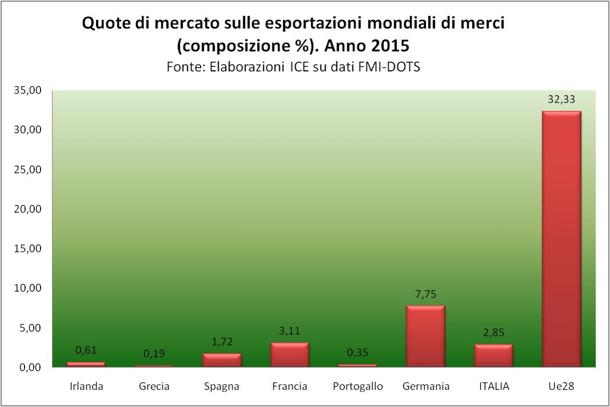Chi sostiene i costi della crisi?
Di fronte a una crisi quasi decennale e che non accenna a esaurirsi, chi dovrebbe sostenerne maggiormente il peso? La risposta a questa domanda non è affatto scontata: in barba a qualsiasi principio di giustizia economica e di progressività fiscale – come quello sancito dall’articolo 53 della nostra Costituzione (“Tutti sono tenuti a concorrere alle spese pubbliche in ragione della loro capacità contributiva”) –, pressoché ovunque in Europa l’aliquota marginale più alta per la tassazione dei redditi delle persone fisiche ha subito nell’ultimo decennio una netta diminuzione: dal 47 al 39,3% la media europea, dal 51 al 48,9% in Italia. A quanto pare, non soltanto la crisi non viene pagata da chi ha di più, ma chi ha di più viene ulteriormente avvantaggiato.

L’infruttuosa gara al ribasso sulle tasse alle imprese
Insieme ai ricchi, sempre meno tassati, grazie al mercato comune e alla concorrenza fiscale anche gli imprenditori riescono di anno in anno a ottenere un trattamento sempre più favorevole. La nettissima diminuzione media della tassazione dei redditi d’impresa in tutta l’Unione Europea fra il 1996 e il 2015 – in Italia si passa ad esempio dal 53,2 al 31,4%, in Germania dal 56,7 al 30,2%, in Irlanda dal 38 al 12% – mostra infatti come i paesi europei siano entrati in una gara al ribasso tanto forsennata quanto infruttuosa sulla tassazione delle imprese per attrarre occupazione. Non solo dunque maggiore flessibilità sul mercato del lavoro (leggasi meno diritti per i lavoratori), ma anche meno tasse per le imprese con l’illusione di scongiurare il rischio delle delocalizzazioni.

Un mercato interno bloccato
Dopo l’insorgere della crisi economica nel 2008, il fatturato della produzione industriale italiana fa registrare un miglioramento per quel che riguarda il dato sull’estero, ma rimane al palo sul fronte interno. La domanda interna non mostra alcun segnale significativo e continuativo di ripresa da quasi un decennio. Servirebbe, subito, un serio piano di politiche industriali per sostenere il rilancio del mercato interno nel nostro paese.
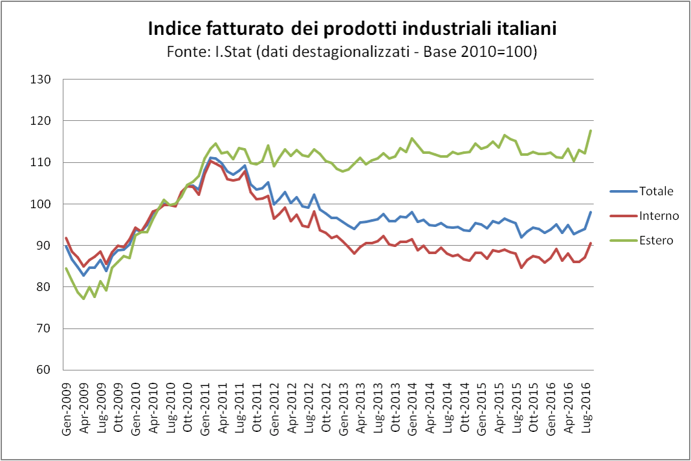Crollano gli investimenti
L’Italia ha subito una progressiva e forte perdita di competitività causata anche da un drammatico calo degli investimenti nel paese: questa contrazione, a sua volta, concorre alla stagnazione frenando le possibilità di una ripresa economica. In questo quadro, continuare a elargire finanziamenti a pioggia alle imprese – come fa il piano “Industria 4.0” con i super ammortamenti – non sembra affatto la strada giusta da seguire se si vuole invertire la rotta attraverso una politica industriale lungimirante, capace di premiare i settori più dinamici e innovativi.

L’Italia sommersa
Più di 211 miliardi di euro, il 13% del Pil italiano: a tanto ammonta nel 2014 la stima dell’economia non osservata. Questa è rappresentata dalla somma tra il volume dell’economia sommersa – costituita in grandissima parte da sotto dichiarazione e lavoro irregolare – e quello derivante dalle attività illegali. Il dato peraltro peggiora (nel 2011 la stima era di circa 203 miliardi, pari al 12,4% del Pil), dimostrando l’inadeguatezza delle politiche messe in atto per contrastare evasione fiscale, lavoro nero e criminalità organizzata nel nostro paese. E per recuperare ingenti risorse per le casse statali.
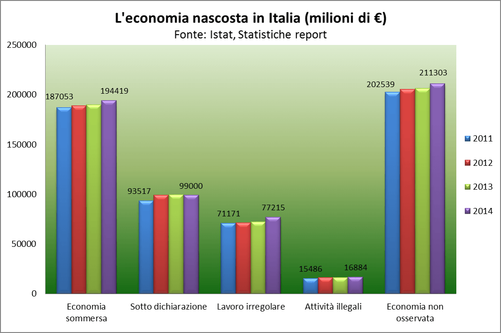Lavoro: un’Europa divisa
Guardando al tasso di disoccupazione all’interno dell’Unione Europea emerge con chiarezza lo spaccato di un continente diviso, dopo quasi dieci anni di crisi e altrettanti di politiche di austerità: da un lato i paesi dell’Europa del Nord, dall’altro quelli della periferia, tra cui i cosiddetti “Piigs” (Portogallo, Irlanda, Italia, Grecia, Spagna). In questo quadro, l’Italia (12,7%) si colloca due punti percentuali e mezzo al di sopra della media europea (10,2), mentre Grecia e Spagna mostrano i dati peggiori: rispettivamente 26,5 e 24,5%.
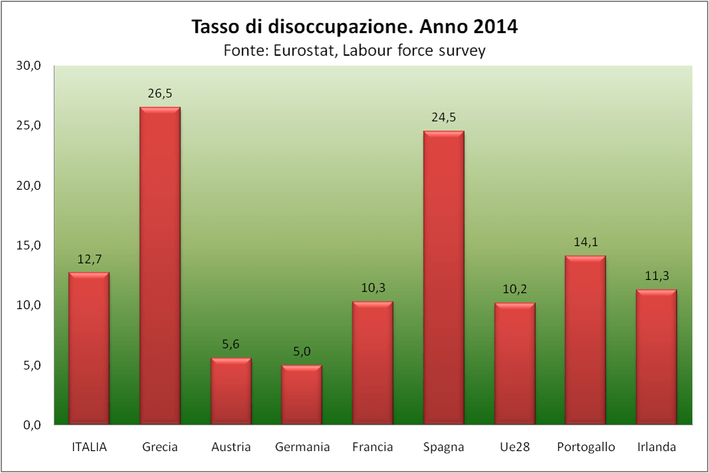Se non hai lavoro... non lo troverai
Ben più della metà dei disoccupati italiani – il 61,4% – sono disoccupati di lunga durata, sono cioè alla ricerca di un’occupazione da più di un anno. Il dato evidenzia la strozzatura e la bassissima dinamicità del mercato del lavoro italiano: facendo un confronto, l’Italia appare ampiamente al di sopra della media europea (49,6%) in termini di incidenza di disoccupati di lunga durata sul totale dei disoccupati, seconda solo alla Grecia tra i paesi “Piigs”.

Il lavoro per i giovani, questo sconosciuto
Le riforme del mercato del lavoro degli ultimi anni non sono riuscite a migliorare la drammatica situazione in cui versa il mercato del lavoro giovanile: quasi la metà dei giovani italiani tra i 15 e i 24 anni (il 42,7%) non riesce a trovare un impiego. Il nostro paese si colloca oltre 20 punti percentuali al di sopra della media europea (22,2%). Il dato evidenzia anche la profonda spaccatura all’interno dell’Unione Europea; il tasso di disoccupazione nei paesi “Piigs” è infatti nettamente superiore rispetto, ad esempio, a quello che si riscontra in Germania (7,7%).
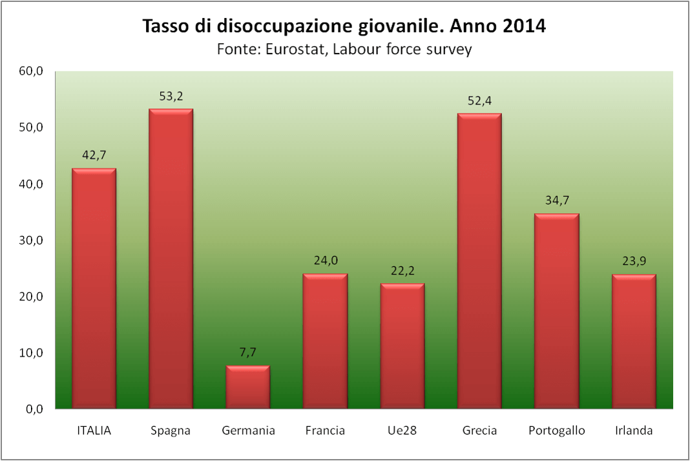Si lavora tanto...
Chi ha un’occupazione, lavora molto. Le ore medie lavorate in Italia in un anno sono infatti quasi 1.600 per impiegato: un riscontro in linea con quello degli altri paesi ”Piigs”, ma ben più alto rispetto a quello francese (1.399) e tedesco (1.309 ore). Alla luce di questo dato – e di quello relativo alla disoccupazione – l’opzione “lavorare meno, lavorare tutti” sembra davvero auspicabile e attuale...
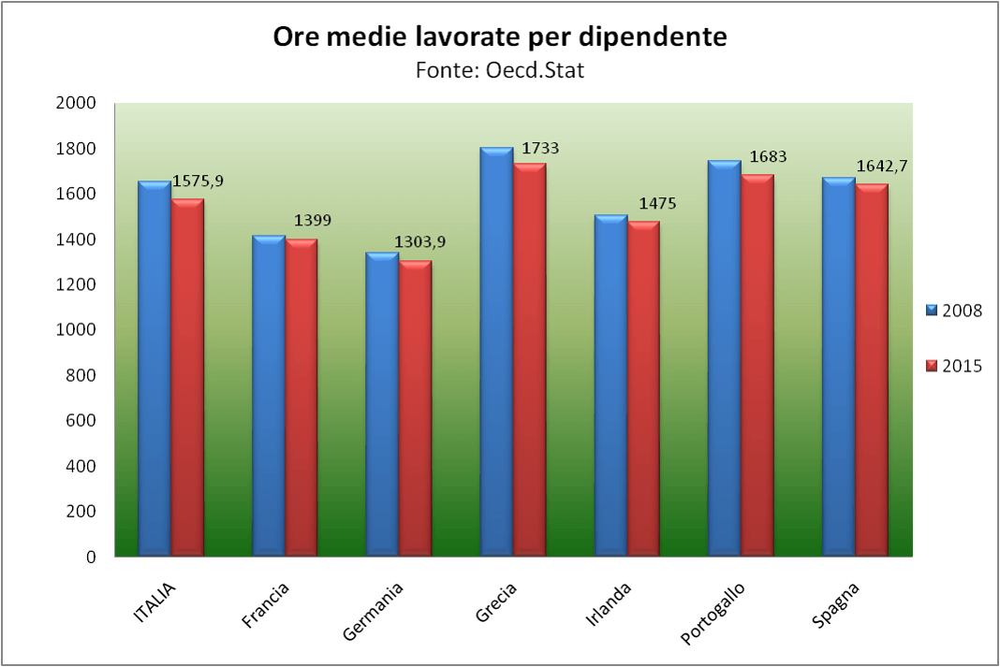…si guadagna poco (e non si esce dalla crisi)
La crisi ha avuto un impatto negativo sul mercato del lavoro italiano non solo perché è aumentata la disoccupazione, ma anche perché i salari sono diminuiti. Si tratta di una dinamica in controtendenza rispetto a quella registrata dal 2008 al 2015 in Europa, dove ad esempio Francia, Germania, Irlanda e Spagna hanno visto un aumento – in Germania e Francia più consistente che altrove – dei salari medi. Tutto ciò chiama in causa la scelleratezza delle politiche comunitarie, pienamente sposate dai nostri governi, per invertire il ciclo economico: politiche tutte centrate sulla compressione e la moderazione salariale al fine di spingere la competitività e compensare il gap di produttività dei paesi membri dell’Unione Europea.
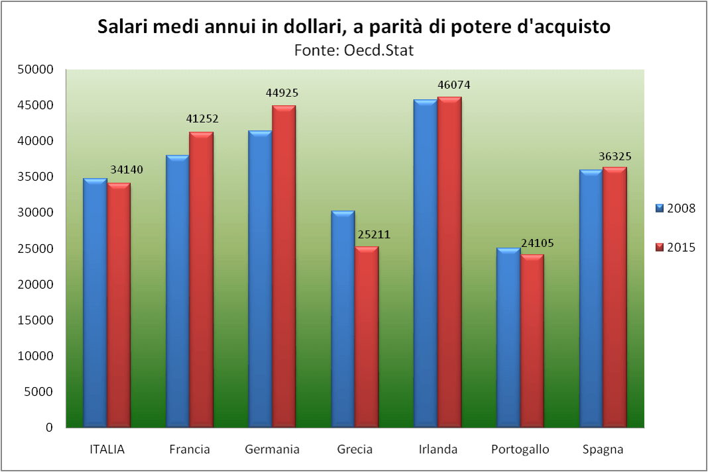Aumentano i voucher, cresce il precariato
Tra il 2008 e il 2015 si assiste a una diffusione esponenziale e persistente dell’utilizzo dei voucher nel mercato del lavoro italiano. Nel 2016, fino a settembre, ne sono stati venduti ben 96,5 milioni. Oltre a mostrare questa dinamica di crescita costante, i voucher hanno cominciato a diffondersi in modo significativo in settori dell’economia quali turismo, ristorazione e vendita al dettaglio (il 40% dei voucher venduti nel 2015 sono stati utilizzati in questi tre settori – Fonte: Inps) configurandosi come una nuova forma di precariato e allontanandosi dalla loro natura originaria di strumento di nicchia utile all’emersione del lavoro nero e alla formalizzazione di mansioni particolari.

La grande bolla del Jobs Act (parte I)
Al di là della grande retorica con cui è stato presentato dal governo Renzi, il Jobs Act non sembra aver migliorato le condizioni del mercato del lavoro italiano. Il grafico che segue mette in luce l’importanza delle trasformazioni contrattuali: il forte aumento dei contratti a tempo indeterminato a dicembre 2015 e la repentina caduta da gennaio 2016 in poi testimoniano il ruolo chiave degli incentivi nello stimolare questa dinamica. Un’altra conferma del ruolo prevalente della decontribuzione nello spiegare la dinamica dei contratti a tempo indeterminato nel 2015 – ruolo valutato rispetto all’effetto atteso dalle modifiche alla disciplina dei licenziamenti prevista dal Jobs Act – emerge dall’analisi della dinamica dei contratti a tempo indeterminato tra 2014 e 2016: una volta operata infatti la riduzione del 50% dell’importo degli sgravi ottenibili dalle imprese a fronte di assunzioni e trasformazioni con il nuovo contratto a tutele crescenti (gennaio 2016), i contratti permanenti risultano inferiori rispetto sia al 2015 che al 2014.

La grande bolla del Jobs Act (parte II)
Nel corso del 2015 il maggiore incremento di occupati è stato registrato nei settori cosiddetti “Suppliers Dominated”, ovvero quei settori del manifatturiero e dei servizi a basso contenuto tecnologico caratterizzati per lo più da strategie di acquisizione delle innovazioni dai propri fornitori. Al contrario, lo scorso anno il numero di occupati nei settori “Science Based” è diminuito. Queste dinamiche evideziano che l’aumento occupazionale registrato su base annuale si è concentrato per lo più in settori a basso valore aggiunto e modesti investimenti in Ricerca&Sviluppo. Analizzando poi la disarticolazione su base regionale della variazione di occupati durate l’anno, si vede bene che le regioni in cui il numero di occupati è cresciuto di più sono proprio quelle in cui l’occupazione è aumentata nei settori a basso contenuto tecnologico.
Un paese fortemente diseguale
I dati sulla distribuzione del reddito in Italia descrivono un paese attraversato da profonde diseguaglianze economiche. Quasi il 27% delle famiglie italiane si colloca all’interno dell’ultimo decile di reddito (pari in media a 11,336 euro) detenendo quindi il 10% del reddito complessivo. Ben il 54,7% delle famiglie si colloca negli ultimi tre decili, con reddito medio pari o inferiore ai 24.627 euro. Solo il 26,5% delle famiglie si colloca nei cinque decili più alti con redditi medi superiori a 41.348 euro. Il ceto medio si restringe, e la ricchezza tende a concentrarsi sempre di più nelle mani di pochi.

Giovani senza futuro
Per quasi un terzo dei giovani italiani non sembra inappropriato e fuorviante l’utilizzo dell’espressione “generazione no future”. L’Italia è infatti uno dei paesi europei con il maggior tasso di Neet (acronimo di “Not in Education, Employment, or Training”), giovani di età compresa tra i 15 e i 29 anni che non studiano, non lavorano e non sono inseriti in alcun percorso di formazione. Il confronto con Paesi Bassi e Germania parla da sé: 26,2% di Neet nel nostro paese contro, rispettivamente, 7,2 e 8,7% (la media europea è pari al 15,3%).

Sette milioni in condizioni di grave deprivazione
L'impatto della crisi economica sulle fasce più deboli – in assenza di politiche, misure e interventi strutturali di sostegno al reddito e di inclusione sociale e lavorativa – è stato e continua a essere pesantissimo. Dal 2008 al 2014 le persone in condizione di grave deprivazione materiale sono arrivate a superare i 7 milioni (erano poco meno di 4,5 nel 2008), passando dal 7,6 all'11,6% della popolazione italiana: un dato allarmante. L'indicatore di grave deprivazione materiale calcola la percentuale di persone che rivelano almeno 4 segnali di deprivazione tra i seguenti 9: non riuscire a sostenere spese impreviste; avere arretrati nei pagamenti (mutuo, affitto, bollette, debiti diversi dal mutuo); non potersi permettere una settimana di ferie lontano da casa in un anno, un pasto proteico almeno ogni due giorni, il riscaldamento adeguato dell’abitazione, l’acquisto di una lavatrice, o di un televisore a colori, o di un telefono, o di un’automobile.

Una spesa sociale carente e inadeguata
In Italia si spende troppo poco per finanziare misure e interventi in settori cruciali come disoccupazione, disabilità, malattie e famiglie. È questo il dato che emerge dal confronto tra la composizione della nostra spesa sociale e quella della media dei paesi dell’Unione Europea. Due esempi concreti: nel nostro paese l’incidenza della spesa per la disoccupazione sul Pil è pari all’1,2% per il 2014, in Germania all’1,8%, in Francia al 2%, in tutta Europa all’1,5%. Ancora peggiore il risultato del confronto europeo sulla spesa sociale per malattie e disabilità: 1,8% sul Pil in Italia contro il 3% in Germania, il 2,9% in Francia, il 2,8% in Europa.
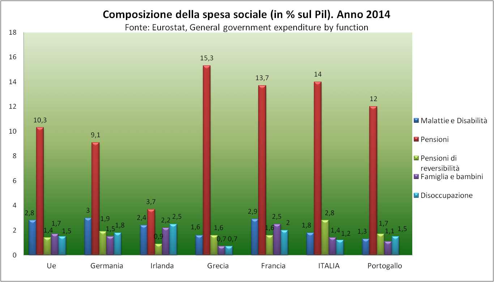La spesa sanitaria non è così alta
Al contrario di quanto generalmente si pensa, la spesa sanitaria pubblica italiana, pari a poco più di 2.300 dollari per abitante nel 2013, non è affatto alta se confrontata con quella di altri paesi europei come Francia (3.247 dollari) e Germania (3.677 dollari). Anni e anni di insistenza da parte di politici, opinionisti ed “esperti” sulla pretesa insostenibilità della nostra spesa pubblica hanno spianato la strada – o hanno di fatto legittimato – ai continui tagli nel finanziamento dei servizi pubblici e alla loro privatizzazione. Questo vale in particolare per la sanità pubblica: un settore, come è noto, estremamente “appetibile”...
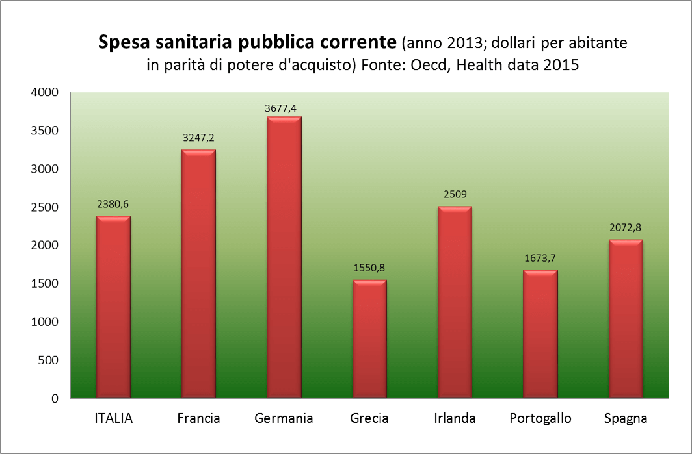La crisi la pagano le donne
Sul mercato del lavoro sono le donne a subire più pesantemente gli effetti della crisi economica. È quanto emerge dal dato sull’aumento della differenza retributiva tra uomini e donne, che passa dal 4,9% al 6,1% tra il 2008 e 2014. Anche se l’Italia rimane uno dei paesi europei più virtuosi nel limitare la disparità tra quanto guadagnano gli uomini e quanto le donne, è evidente che il peso della crisi ricada più sulle seconde che sui primi. Se negli altri paesi europei considerati, ad eccezione del Portogallo, il differenziale retributivo tende infatti a scendere (dal 17,3 al 16,7% la media europea, un dato sempre troppo alto), in Italia tra il 2008 e il 2014 è cresciuto. Occorre dunque rimarcare con forza che qualsiasi disparità di trattamento salariale tra uomini e donne è, ovunque, assolutamente ingiustificata e ingiustificabile.
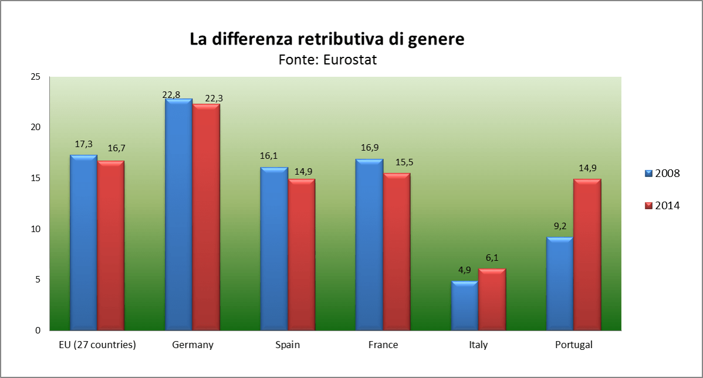Gente senza casa, e case senza gente
Se prima dello scoppio della crisi gli sfratti emessi in Italia erano circa 40mila ogni anno, nel 2014 sono stati più di 77mila e nel 2015 più di 64mila. Il numero delle richieste di esecuzione forzata è, nel frattempo, aumentato del 50%. L’incremento è dovuto sostanzialmente all’esplosione della morosità, che prima della crisi rappresentava il 65% del totale degli sfratti, mentre giunge oggi al 90%. Inoltre, sono circa 700mila le famiglie che, pur certificate dai comuni come utilmente collocate nelle graduatorie per ottenere una casa popolare, rimangono a oggi senza risposta. E sono 1 milione e 700mila le famiglie in condizione di disagio abitativo, che pagano cioè un affitto superiore al 30% del loro reddito complessivo. Un ultimo dato: la stima di alloggi propriamente vuoti e inutilizzati nel nostro paese è di circa 4 milioni. A fronte di numeri e tendenze come queste, il governo ha pensato bene di azzerare nel 2016 il contributo sociale affitti e di ridurre da 60 a 36 milioni il fondo per la morosità incolpevole.
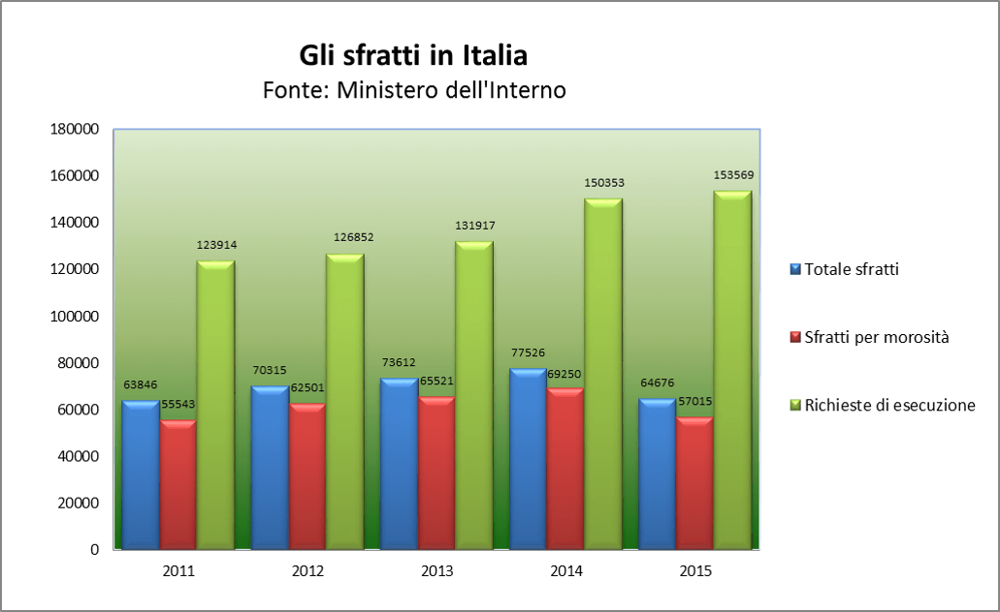Troppo poco per istruzione e formazione
L’Italia destina soltanto il 4,1% del proprio Pil all’istruzione e alla formazione. Dopo più di un decennio di tagli a questi importanti capitoli di spesa, il risultato è scontato: ci troviamo al di sotto della media europea (5%), seguiti solo da Romania (2,8%) e Spagna (4%). A dimostrazione del disinteresse nei confronti, innanzitutto, delle generazioni più giovani. E della miopia che una simile scelta comporta in termini di disinvestimento sul nostro futuro. 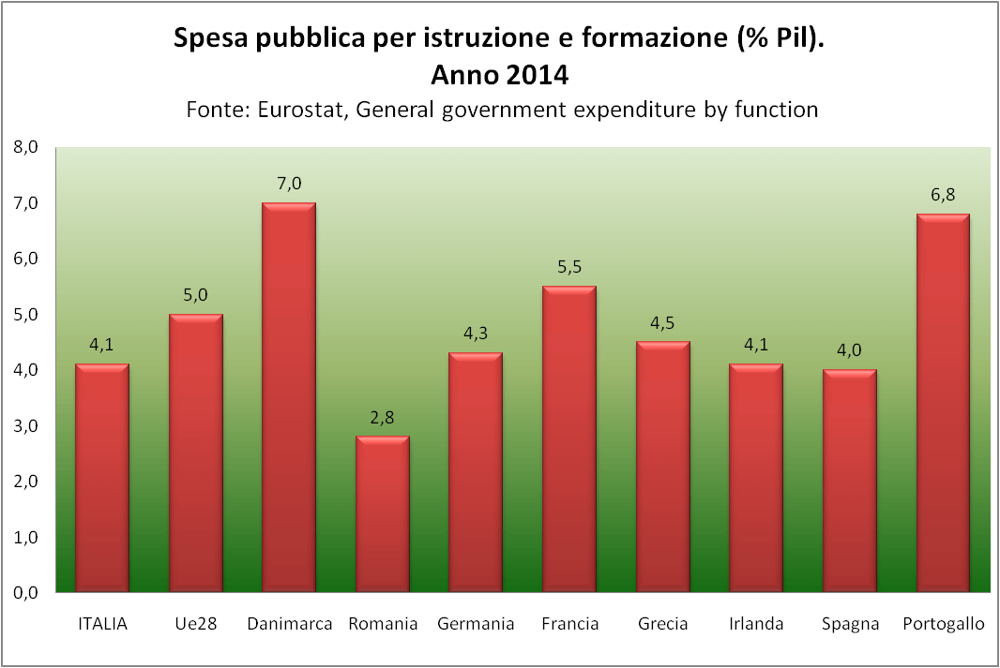Scuola dell’obbligo, e niente più
Oltre il 40% degli italiani di età compresa tra i 25 e i 64 anni ha un titolo di studio non superiore al diploma di scuola secondaria di primo grado (ovvero la licenza media). Con questo risultato, l’Italia si colloca molto al di sopra della media europea (24%). Per fare un confronto, basti pensare che in paesi come la Germania e la Repubblica Ceca questa percentuale varia tra il 13,1 e il 6,8%. In queste condizioni, esiste davvero un’alternativa che non contempli un piano di investimento strutturale sull’istruzione nel nostro paese?

Pochissimi laureati
La grande maggioranza dei giovani italiani non continua il proprio percorso di studi dopo aver conseguito il diploma di scuola secondaria. Non a caso la percentuale di persone di età compresa tra i 30 e i 34 anni nel nostro paese in possesso di una laurea (23,9) risulta una delle più basse in tutta Europa, molto al di sotto della stessa media europea (37,9): Francia, Germania, Spagna, Romania, tra le altre, fanno tutte meglio.

Alla ricerca... della ricerca
Nel mercato globale odierno una seria politica di investimenti nella ricerca specifica e applicata e in quella di base è fondamentale, specialmente in Europa. Perseguire obiettivi di crescita e competitività senza investire in ricerca sembra essere invece la strategia – assolutamente perdente – dell’Italia. La spesa totale del nostro paese in ricerca e sviluppo è pari infatti all’1,3% del Pil, lo 0,7% in meno rispetto alla media europea. Per avere un altro termine di confronto, Finlandia e Germania destinano rispettivamente a questo capitolo di spesa il 3,3 e il 2,8%.
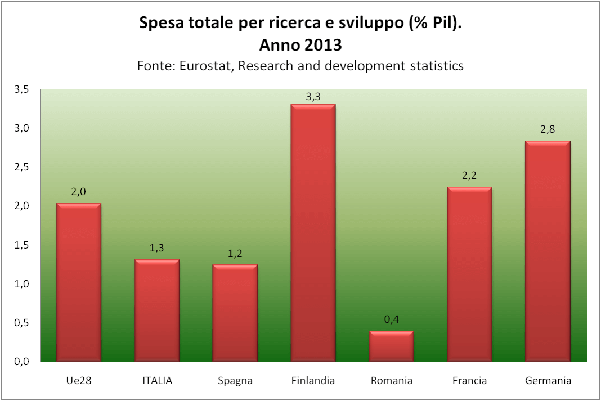Tutti in macchina
In Europa soltanto il Lussemburgo precede l’Italia nella triste classifica relativa al tasso di motorizzazione. Nel nostro paese, ogni 1.000 abitanti ci sono ben 608 autovetture, mentre la media europea è pari a 489, oltre 100 vetture in meno. Dovrebbe bastare solo questo dato a esprimere la necessità e l’urgenza di un radicale cambiamento di prospettiva – accompagnato da adeguati investimenti nelle politiche – che guardi innanzitutto alla mobilità sostenibile e al trasporto pubblico, per abbattere congestionamento e inquinamento e per scoraggiare l’utilizzo del mezzo privato (soprattutto nelle aree urbane).

L’alta velocità non basta
Il confronto europeo in merito alla copertura della rete ferroviaria italiana – impietoso è il paragone con la Svezia – mette in luce la miopia di politiche dei trasporti e della mobilità che da anni sono incentrate sugli investimenti per le grandi opere e le linee ad alta velocità: politiche sbagliate, incapaci di considerare e di far fronte ai bisogni di centinaia di migliaia di pendolari che quotidianamente si spostano utilizzando i treni locali – sempre meno frequenti e puntuali, e sempre più scomodi e congestionati – come mezzo di trasporto.

Tutto in discarica!
L’Italia continua a occupare posizioni non certo invidiabili nella classifica europea relativa allo smaltimento dei rifiuti in discarica: con 181,2 chilogrammi per abitante il nostro paese si attesta infatti al di sopra della media europea (147,4 kg/abitante). Senza considerare il confronto, addirittura imbarazzante, con la virtuosa Germania (1,4 kg/abitante).
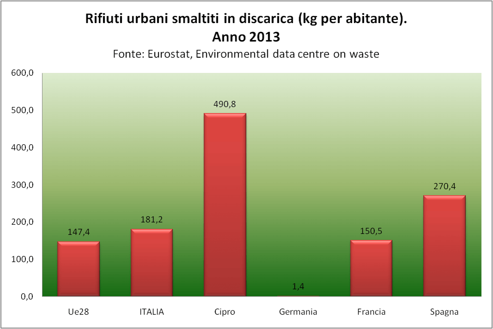L’Italia delle fonti rinnovabili
Una buona notizia che merita di essere evidenziata viene dal fronte delle fonti di energia rinnovabili: l’Italia fa registrare infatti nel periodo 2004-2014 una crescita costante ed esponenziale dei consumi di energia elettrica coperti da fonti rinnovabili. Nell’arco di un decennio tali consumi sono più che duplicati (dal 15,5 al 37,3%), arrivando a coprire quasi il 40% dell’intero fabbisogno nazionale.
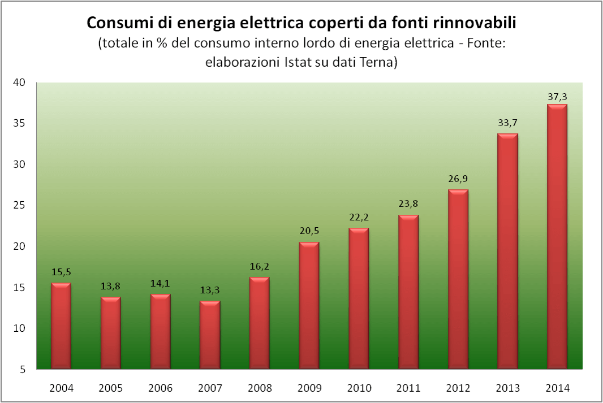Armati fino ai denti
Se c’è un capitolo di spesa pubblica che proprio non conosce crisi nel nostro paese è senza dubbio quello che riguarda l’acquisto di nuovi armamenti. Nell’arco di dieci anni, si registra infatti un aumento di oltre 2 miliardi di euro, da poco più di 3 miliardi nel 2006 agli oltre 5 miliardi di oggi. E nel 2017 avremo un ulteriore aumento rispetto al 2016 sia dello stanziamento previsionale a bilancio del Ministero della Difesa per i programmi di acquisizione e ammodernamento di armamenti, sia dei contributi che il Ministero dello Sviluppo Economico destina allo stesso scopo. In base ai calcoli dell’Osservatorio Mil€x, sommando le due voci la spesa in armamenti nel 2017 supererà i 5,6 miliardi di euro – oltre 15 milioni di euro al giorno, con un aumento di quasi il 10% sul 2016 – arrivando a rappresentare quasi un quarto della spesa militare complessiva.